QIS PROTOCOL
Quadratic Intelligence Swarm
The TCP/IP of Quadratic Swarm Intelligence
QIS is live. Anyone can join.
Quadratic Intelligence Swarm (QIS) — the distributed intelligence protocol discovered by Christopher Thomas Trevethan on June 16, 2025. The first implementation is running right now. ~512-byte outcome packets route between nodes, producing N(N-1)/2 intelligence connections at O(log N) or better per-node cost — O(1) with a database semantic index. Every component existed. The closed loop did not.
Live from the QIS global relay — relay.yonderzenith.com — refreshed every 60s.
Spin up a node in 5 minutes
YonderClaw is the first reference implementation of QIS. Install it on any machine and your node joins the global swarm immediately. 10 agents free per human or per organisation.
Node.js 18+. Auto-registers to the relay. Free for research, education, humanitarian use at any scale.
Articles
The Paradigm Shift in Three Words
Route the insight. The inversion that changes everything.
→ Full SystemThe QIS Architecture Diagram
The complete system in one visual. Every layer, every flow.
→ FrameworkThe Three Elections
Who defines similarity? Who stores outcomes? Who synthesizes?
→ Deep DiveThe 11 Flips
Every assumption inverted. The complete list of paradigm reversals.
→ ProofEvery Component Already Exists
Not speculation. Engineering. Every piece named and cited.
→ Start HereYou Just Got Diagnosed. WYD?
Two choices. One changes everything.
→ TechnicalThe QIS Scaling Law
Θ(N²) Emergent Intelligence with O(log N) or better Communication
→ ExplainerQIS in One Picture
The 60-second explanation. If you understand mailboxes, you understand QIS.
→ Big AIHow Big AI Wins with QIS
Google, Anthropic, OpenAI, xAI — the integration strategy.
→ OriginJune 16
The exact moment everything changed.
→Epiphany Generator
Click to unlock a new way to understand QIS — varied explanations from analogies to mathematics.
Ask the AIs about QIS
The leading AI assistants have already read what's on this site. Ask them directly. They'll explain the scaling law, compare it to federated learning, and cite the relevant articles — no special prompt engineering required.
Starter queries — click to copy
Notice: QIS is a proposed distributed intelligence framework. All content and AI-generated analysis is informational only and not medical, legal, or financial advice. Full Disclaimer
What Rob van Kranenburg Said About QIS
Rob van Kranenburg — Founder of the IoT Council, the world's largest independent IoT think tank
This seems like a perfect underlying system for when we have full coverage of self driving cars.
— Rob van Kranenburg (@robvank) September 3, 2025
Documents & Whitepapers
Comprehensive technical documentation and research
Architecture Diagram
Visual breakdown of all 7 layers — the complete system in one view
Articles & Blog
78+ articles — insights, deep dives, and the complete story
Core Specification
Complete technical specification of the QIS Protocol, mathematical proofs, and implementation guidelines.
QIS Whitepaper
Comprehensive overview of the Quadratic Intelligence Swarm protocol, applications, and paradigm shift.
The Next Tech Race
When companies compete to save lives. A paradigm shift from data hoarding to pattern curation.
Compare Approaches
QIS Protocol vs. federated learning, centralized AI, edge AI, and more. Full technical comparison with interactive calculator.
Interactive Demos
Explore live demonstrations of the QIS Protocol in action. Visualize quadratic scaling and distributed pattern synthesis.
How It Works
Step-by-step explanation of QIS Protocol technology - from local data ingestion to quadratic intelligence swarm.
Compare Approaches
See how QIS Protocol compares to Centralized AI, Federated Learning, and Edge AI architectures.
FAQ
Frequently asked questions about QIS Protocol - technical details, applications, and implementation.
About
The story behind QIS Protocol and Yonder Zenith LLC - mission and vision.
Industries Transformed by QIS
Domain-agnostic protocol with infinite applications
Healthcare
Precision medicine, early detection, treatment optimization, drug safety monitoring, rare disease networks, mental health pattern matching
Agriculture
Smart tractors, soil sensors, yield optimization, crop disease detection, supply chain efficiency, weather pattern synthesis
Emergency Response & Disaster Management
Real-time disaster coordination, first responder pattern synthesis, resource allocation optimization, evacuation route intelligence, multi-agency coordination
Finance
Distributed trading intelligence, risk synthesis, fraud pattern detection, market anomaly identification, regulatory compliance
Manufacturing & Industrial IoT
Predictive maintenance, quality control, factory swarm coordination, supply chain optimization, energy efficiency
Energy Grid
Smart meters, load balancing, outage prevention, renewable integration, demand prediction, grid resilience
The Grind Behind QIS
- Discovered June 16, 2025
-
39 provisional patents filed
300+ pages, 500+ claims, 30+ industries -
100+ simulations run
O(N²) Scaling Validation R²=1.0 • Logarithmic Routing Confirmed (53% improvement over theoretical)
100% Byzantine rejection rate • Zero cross-contamination ("teleporting to the right lung") - 5,000+ pages of proofs & research
- 2,000+ hours invested
- $50,000+ self-funded
Get Involved
This is infrastructure-level technology. Like TCP/IP for the internet, QIS is the foundation for distributed intelligence.
Contact & Licensing
Email: contactyz@pm.me
Non-exclusive licensing available for all domains. Free for humanitarian and non-profit use. Commercial licensing inquiries welcome.
Yonder Zenith LLC • Redefining The Horizon